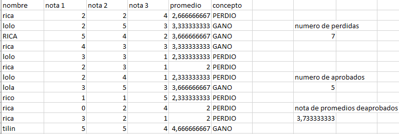
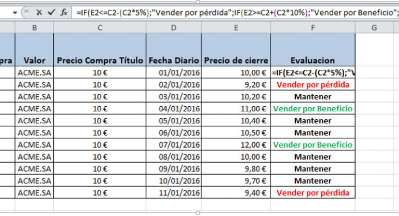
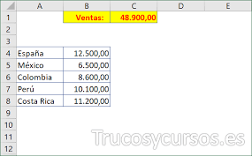
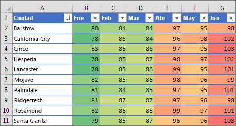

¿Qué es un formato condicional en Excel?
El formato condicional es una herramienta útil para identificar patrones o tendencias en una hoja de cálculo. Por ejemplo, una regla podría ser: si el valor es mayor que 5.000, que la celda sea amarilla. Así, podrás ver de un vistazo las celdas cuyo valor es superior a 5.000.

¿Cuál es la función condicional en Excel?
Una función condicional es aquella que nos permite realizar una acción siempre y cuando se cumpla con una condición determinada por el usuario. Por ejemplo, cuando se quiere saber cuales fueron las ventas de un empleado, caso en el cual Excel sumará sólo las ventas

¿Cuáles son los conceptos basicos de Excel?
Los documentos de Excel se denominan “libros” y están divididos en “hojas”. ...
Filas: espacios horizontales de la hoja de cálculo. ...
Celda: es la unidad de trabajo de la hoja de cálculo. ...
Cuadro de nombres: muestra el nombre de la celda activa.
Columnas: espacios verticales de la hoja de cálculo.

¿Qué tipos de formatos condicionales existen en Excel?
Tipos de formato condicional
Formato condicional: Resaltar reglas de celdas.
Formato condicional: Reglas superiores e inferiores.
Formato condicional: Barras de datos.
Formato condicional: Escalas de color.
Formato condicional: Conjuntos de iconos.


¿Que te permite realizar el formato condicional?
El formato condicional facilita el proceso de resaltar celdas o rangos de celdas interesantes, destacar valores inusuales y ver datos empleando barras de datos, escalas de colores y conjuntos de iconos que se correspondan con las variaciones específicas de los datos

¿Que te permite realizar el formato condicional?
El formato condicional facilita el proceso de resaltar celdas o rangos de celdas interesantes, destacar valores inusuales y ver datos empleando barras de datos, escalas de colores y conjuntos de iconos que se correspondan con las variaciones específicas de los datos.